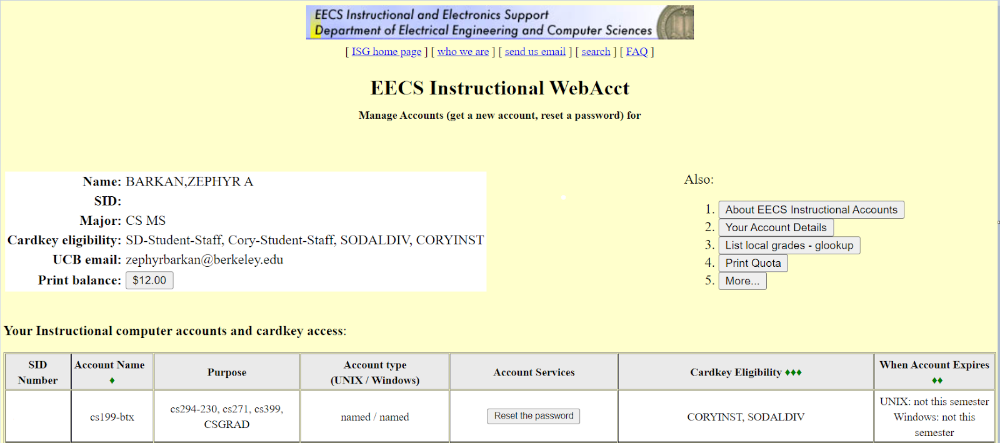

使用 Soda 实验室机器
作者：Zephyr Omaly，由 Ethan Ordentlich 编辑
1. 获取您的用户名和密码
首先，我们必须确保您有一个有效的账户。使用您的 CalNet ID 登录 acropolis： https://acropolis.cs.berkeley.edu/~account/webacct/
您的仪表板应该看起来像这样（列出不同的课程）：

您的 61B 账户的用户名列在"账户名称"列中。例如，我的用户名是 cs199-btx
您的用户名将以 CS61B 开头！
对于与 CS61B 关联的账户，请确保它已激活并且您已保存密码。您可以（并且可能应该）将密码作为 PDF 发送给自己以便保管。
有关教学账户的更多信息，请在此处阅读官方文档： https://acropolis.cs.berkeley.edu/~account/webacct/cas/index.cgi
登录设备
现在前往 Soda！实验室机器位于二楼的实验室房间和 Soda 330。系统提示登录时，请使用您的 61B 用户名和关联的密码。这将使您进入您的账户！
设置设备
幸运的是，您通常需要的软件已安装在 Soda 计算机上。但是，您需要设置您的个人仓库和 61b 特定的库。按照实验 1 中的这些步骤操作：
现在您可以像在个人电脑上一样使用这个设备了！